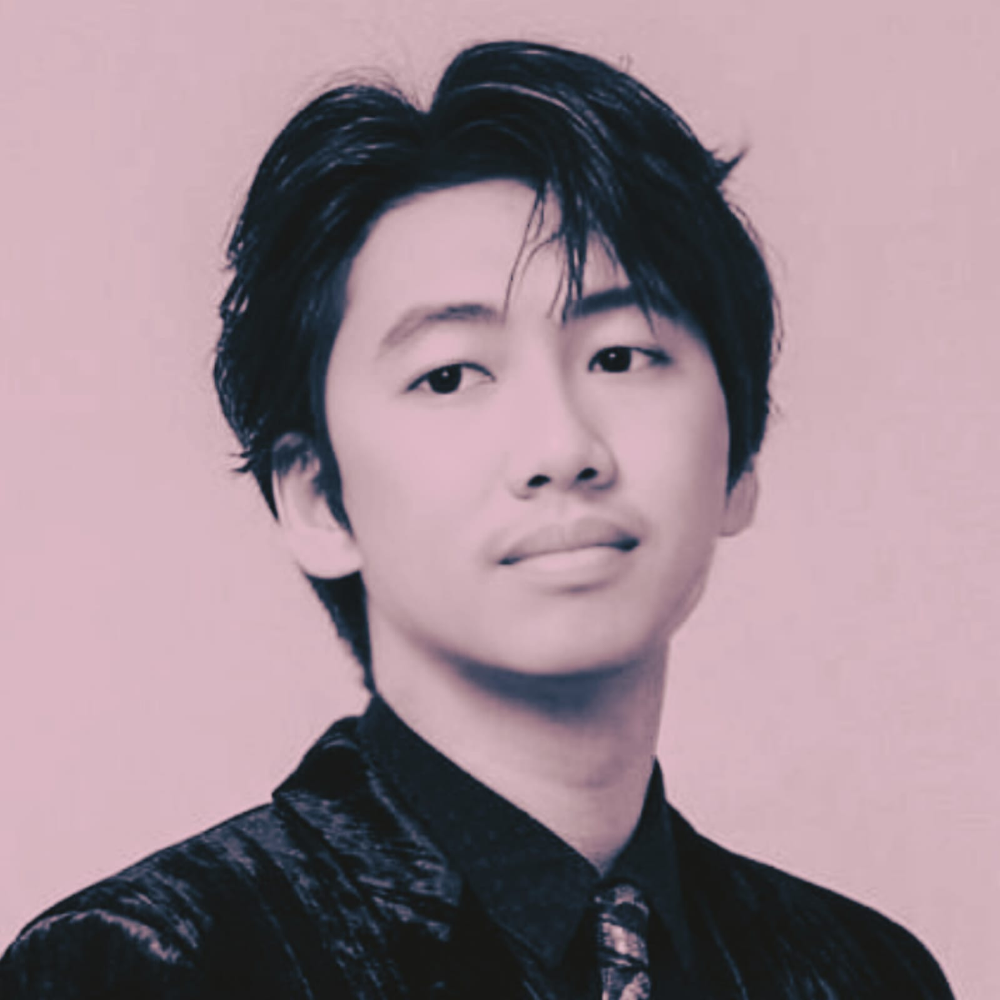

26 tahun · Builder · Surabaya
Mohammad Rusdianto — dalam perjalanan membangun sesuatu yang besar
Pemalu, takut ditolak, overthinking — tapi justru itu yang mendorong aku membangun bisnis online dari nol. Karena jualan langsung? Tidak berani.

Mohammad Rusdianto
Lahir Oktober 1999 di Surabaya — di gang sempit pinggir sungai, rumah sepetak 4x4.
Ayahku tukang becak. Tidak ada les, tidak ada fasilitas lebih. Tapi sejak kecil aku sudah terbiasa
mencari jalan sendiri.
Di sekolah selalu bisa bersaing — ranking 3 besar dari TK sampai SMK, tanpa les,
bersaing langsung dengan anak guru dan anak yang les tiap hari. Dua kali sistem tidak berpihak,
tapi kualitas tidak pernah hilang. Lulus SMK Akuntansi 2018 —
dan fondasi itu yang membuat sistem bisnisku bisa berjalan rapi sampai sekarang.
Wajahku memang keliatan chinese — ada darah dari ayah. Tapi pergaulanku?
Arek Suroboyo Kentel COK Wkwkwk. Dua hal yang tidak pernah aku pilih,
tapi keduanya jadi bagian dari siapa aku.
Aku bukan orang yang sudah sampai.
Aku sedang dalam perjalanan — dan memilih mendokumentasikannya secara jujur.